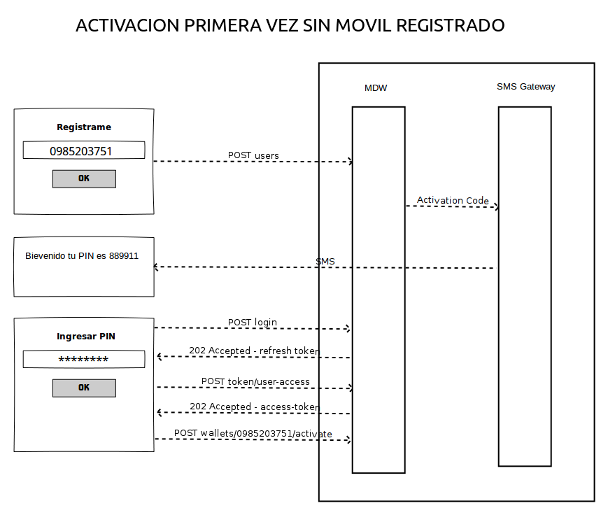
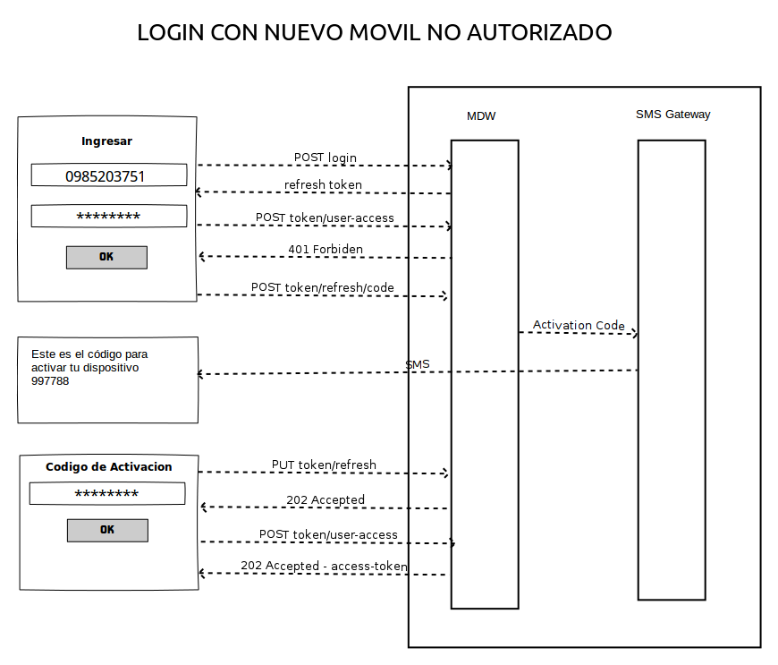

6. Casos de Uso de Acceso¶
En este apartado queremos resumir los 3 casos de uso principales al momento de autenticarse al MIBI.
6.1. Desde el Teléfono¶
6.1.1. Registro de cliente¶
El caso de uso es cuando el usuario registra su número de celular y aún no autorizo ningún dispositivo móvil.
Observación:
Registro desde la Web
En caso de que el registro sea por la Web, no se autoriza ningún dispositivo móvil por lo que el escenario sería muy similar a Ingreso a la web
6.1.2. Ingreso a la App¶
El segundo caso es cuando el usuario está registrado y ya posee un teléfono móvil activado y cambio de celular por lo que tiene que volver a activar este dispositivo.
